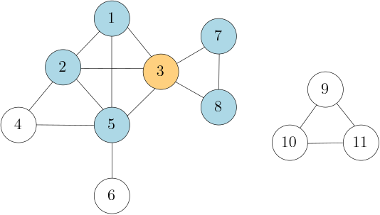

Graphs
Basic definitions and representations
1. Undirected Graphs

In the case when there are multiple edges between a pair of vertices, meaning that the edge set is a multiset, we speak of a multigraph. An edge that connects a vertex with itself is called a loop. In most applications we consider, graphs are simple, meaning they neither have multiple edges nor loops. The example shown here is a simple graph.
One of the most fundamental concepts used in graph algorithms is that of the neighborhood of a vertex. For a vertex $v \in V(G)$, the set of its neighbors, denoted by $N_G(v)$ or simply $N(v)$, is the set of vertices $w \in V(G)$ such that the edge $\{v, w\}$ is present in the edge set of $G$. For instance, in the example graph above, the neighbors of the vertex $3$ are the vertices $1, 2, 5, 7, 8$, i.e., $N(3) = \{1, 2, 5, 7, 8\}$.
The degree of a vertex $v$, $\deg(v)$, is the number of edges that are incident with $v$. In the previous example, the degree of vertex $3$ is $5$, as its incident edges are $\{1, 3\}$, $\{2, 3\}$, $\{3, 5\}$, $\{3, 7\}$, $\{3, 8\}$. (As a convention, every loop at a vertex $v$ increases its degree by $2$.) In simple graphs, the degree is equal to the size of the neighborhood, i.e., $\deg(v) = |N(v)|$.
Representations of (simple) undirected graphs
There are several ways of representing graphs in a program, the most straightforward way would be to have two collections, one for the set of vertices, and one for the set of edges. However, we usually require to quickly perform some basic tasks like testing whether two vertices are adjacent, or to iterate over all neighbors of a vertex. We therefore focus on two more useful ways of representing graphs: using neighborhood sets/lists and using an adjacency matrix.
Neighborhood sets/lists
...are convenient when we write algorithms that need to iterate over the neighborhoods
of vertices, for instance in graph traversals.
A graph $G$ is represented by a dictionary
whose key-value pairs are $(v, N_G(v))$ where $v \in V(G)$,
meaning that the vertex $v$ is the key
and its neighborhood $N_G(v)$ is the value.
We can store the neihgborhoods in different ways,
for instance as sets or lists.
We show how to represent the graph above using neighborhood sets;
below we show how to iterate over the neighborhood of the vertex $3$
using this representation.
graph = {
1 : {2, 3},
2 : {1, 3, 4, 5},
3 : {1, 2, 5, 7, 8},
4 : {2, 5},
5 : {2, 3, 4, 6},
6 : {5},
7 : {3, 8},
8 : {3, 7},
9 : {10, 11},
10 : {9, 11},
11 : {9, 10}
}
for w in graph[3]:
# Do something with the neighbor w of 3.
Sets vs lists.
To check wether an edge $\{u, v\}$ is contained in the graph,
we can use the expression
u in graph[v] or, equivalently,
v in graph[u];
asking whether $u$ is in the neighborhood of $v$
(or vice versa),
is equivalent to $\{u, v\}$ being an element of $E(G)$.
It is important to note that the choice of sets vs lists has a big impact
on the efficiency of your program here.
If we used sets to store the neighborhoods, then this check can be performed
in $O(1)$ time,
while storing them as lists,
we might spend up to
$O(|V(G)|)$ time in the worst case.
Memory usage and internal overhead.
We make the common simplifying assumption that a single vertex requires only $O(1)$ bits of memory.
Then, this representation requires $O(|V(G)| + |E(G)|)$ bits in total:
$O(|V(G)|)$ bits for the keys (we have one key per vertex);
and $O(|E(G)|)$ for the edges: each edge $uv \in E(G)$
has the consequence that $v$ is stored in the neighborhood set of $u$
and $u$ is stored in the neighborhood set of $v$,
so each edge increases the memory usage by $2 \cdot O(1) = O(1)$ bits.
As mentioned above, when using sets to represent the neighborhoods,
we can check the presence of an edge in $O(1)$ time.
So both in terms of running time and memory usage,
this representation looks optimal.
However, having sets nested in a dictionary introduces some
``mechanical'' overhead to your program that can, in principle,
slow it down a bit.
In most settings, however, this effect is negligible.
Nevertheless, it is useful to familiarize yourself with more basic
representations of graphs such as adjancecy matrices.
Adjacency matrix
The adjacency matrix of a graph $G$ is a binary matrix $M$ whose rows and columns
are indexed by $V(G)$ such that for all $u, v \in V(G)$,
\[
M[u, v] = \left\lbrace
\begin{array}{ll}
1, &\mbox{if } uv \in E(G) \\
0, &\mbox{otherwise.}
\end{array}
\right.
\]
Note that this matrix is symmetric, meaning we have that
$M[u, v] = M[v, u]$ for all $u, v \in V(G)$.
The most direct way to represent such a matrix is as a 2-dimensional list:
each list represents one row of the adjacency matrix.
For reference, assume that the name of such a 2D-list is
adj.
For this representation, we require the vertex set of $G$ to be $\{0, 1, \ldots, |V(G)|-1\}$.
The $i$-th row in $M$, and so the list stored at the $i$-th position in
adj,
should be the vector indicating which vertices the $i$-th vertex of the graph is adjacent to.
In some cases, this means we have to slightly rename the vertices of an input graph to achieve that;
in the example graph above, we could simply subtract $1$ from the name of each vertex to achieve that.
Then, we could represent the adjacency matrix of this graph as follows:
adj = [
# 1 2 3 4 5 6 7 8 9 10 11
[0, 1, 1, 0, 1, 0, 0, 0, 0, 0, 0], # 1
[1, 0, 1, 1, 1, 0, 0, 0, 0, 0, 0], # 2
[1, 1, 0, 0, 1, 0, 1, 1, 0, 0, 0], # 3
[0, 1, 0, 0, 1, 0, 0, 0, 0, 0, 0], # 4
[1, 1, 1, 1, 0, 1, 0, 0, 0, 0, 0], # 5
[0, 0, 0, 0, 1, 0, 0, 0, 0, 0, 0], # 6
[0, 0, 1, 0, 0, 0, 0, 1, 0, 0, 0], # 7
[0, 0, 1, 0, 0, 0, 1, 0, 0, 0, 0], # 8
[0, 0, 0, 0, 0, 0, 0, 0, 0, 1, 1], # 9
[0, 0, 0, 0, 0, 0, 0, 0, 1, 0, 1], # 10
[0, 0, 0, 0, 0, 0, 0, 0, 1, 1, 0] # 11
]
adj[0][1]
>>> 1
adj[2][5]
>>> 0
In the two examples, observe that
adj[0][1] is $1$
since $\{1, 2\} \in E(G)$
and
adj[2][5] is $0$
since $\{3, 6\} \notin E(G)$.
(Recall that we had to substract $1$ when translating vertex names to indices.)
Note that now iterating over the neighborhood of a vertex $u$ becomes quite tedious,
as we have to iterate over all vertices $v$ and test whether $uv \in E(G)$.
This can make your program much slower compared to using neighborhood sets;
especially if the number of edges is relatively small.
Memory usage and internal overhead. Checking if an edge is present in the graph can once more be done in $O(1)$ time, but in an adjancency matrix, the internal overhead is lower than in neighborhood sets. This is arguably one of the main advantages of using adjacency matrices. However, the overall memory usage can be much higher. For each pair of vertices $u, v \in V(G)$, the adjacency matrix stores an entry; therefore, no matter how many edges we have, we always use $O(|V(G)|^2)$ bits. For graphs with very few edges, for instance when $|E(G)| = O(|V(G)|)$, an adjanceny matrix still uses $O(|V(G)|^2)$ bits of memory whereas the neighborhood set representation would require only $O(|V(G)| + |E(G)|)$ bits, which in this case is $O(|V(G)|)$; significantly less.
Comparison
| Method | How | Advantages | Disadvantages |
|---|---|---|---|
| Adjacency Sets | Dictionary with key-val pairs $(v, N_G(v))$ where $v \in V(G)$ and $N_G(v)$ is stored as a set. | Straightforward iteration over neighborhoods. Memory usage is $O(|V(G)| + |E(G)|)$. | Slight internal overhead due to complex data structure. |
| Adjacency Matrix | 2D-List with indices
$V(G) = \{0, 1, \ldots, n-1\}$
and 0/1-entries, where
adj[u][v] == 1
if and only if $uv \in E(G)$.
|
Basic representation; very efficient testing of $uv \in E(G)$. | Not well-suited to iterate over neighborhoods. Uses $O(|V(G)|^2)$ memory, even when there are only few edges. |
Practice problems: basic graph
2. Directed Graphs
A directed graph (or digraph) $G$ is a pair of a set of vertices (or nodes) $V(G)$ and a set of arcs $A(G)$, where each arc is an ordered pair of vertices of $G$, usually depiced as an arrow going from one vertex to another. In the example digraph $G$, we have $V(G) = \{1, 2, 3, 4, 5, 6, 7, 8, 9, 10, 11\}$ and $A(G) = \{(1, 2), (1, 5), (2, 3), (2, 4), (2, 5), (3, 1), \ldots\}$. Given an arc $e = (u, v)$, we say that $e$ is (directed) from $u$ to $v$. In the example on the right, consider $e_{12} = (1, 2)$. We say that $e_{12}$ is an arc from $1$ to $2$. The notions of endpoints, adjacency, incidence, loops, simple digraphs, multidigraphs carry over naturally from undirected graphs. The set of arcs is often also referred to as the set of directed edges, or simply edges. This set is therefore also commonly denoted as $E(G)$.
The neighborhood of a vertex $v \in V(G)$ in a digraph $G$ splits in two parts. The out-neighborhood of $v$, denoted by $N^+_G(v)$, is the set of vertices $w \in V(G)$ such that $(v, w) \in A(G)$. In other words, $w$ is an out-neighbor of $v$ if there is an arc from $v$ to $w$ in $G$. The in-neighborhood of $v$, denoted by $N^-_G(v)$, is the set of vertices $u \in V(G)$ such that $(u, v) \in A(G)$; a vertex $u$ is an in-neighbor of $v$ if there is an arc from $u$ to $v$ in $G$. In the example, $N_G^+(3) = \{1, 5, 7\}$ and $N_G^-(3) = \{2, 5, 8\}$. Note that $5$ is both an out-neighbor and an in-neighbor of $3$ since both $(3, 5) \in A(G)$ and $(5, 3) \in A(G)$. Again we may drop $G$ as an index whenever it is clear from the context.
The out-degree of $v \in V(G)$, denoted by $\deg^+(v)$, is the number of arcs $(v, w) \in A(G)$ and the in-degree of $v \in V(G)$, denoted by $\deg^-(v)$, is the number of arcs $(u, v) \in A(G)$. Note that in a simple digraph, $\deg^+(v) = |N^+(v)|$ and $\deg^-(v) = |N^-(v)|$.
Representations of (simple) digraphs
Again, arguably the two most common ways of representing simple digraphs is with adjacency matrices and neighborhood sets. An adjancency matrix $M$ of a digraph $G$ can be coded almost identically as we did for undirected graphs, and it comes with the same advantages and disadvantages. The only difference is that $M$ is no longer symmetric. We have that $M[u, v] = 1$ if there is an arc from $u$ to $v$ and $0$ otherwise.
Neighborhood Sets
As each vertex has two neighborhoods, the out-neighborhood and the in-neighborhood, we can use two dictionaries to represent a digraph. One where the key-value pairs are $(v, N^+(v))$, and another one where the key-value pairs are $(v, N^-(v))$. Note that depending on the application, one of the two might suffice. For instance, if we only ever iterate over out-neighborhoods, then the former dictionary suffices. In general, however, it might be beneficial to store both. The example graph could be represented in python as follows.
outnb = {
1 : {2, 5},
2 : {3, 4, 5},
3 : {1, 5, 7},
4 : {5},
5 : {3, 6},
6 : {5},
7 : {8},
8 : {3},
9 : {10},
10 : {9, 11},
11 : {9}
}
innb = {
1 : {3},
2 : {1},
3 : {2, 5},
4 : {2},
5 : {1, 2, 3, 4, 6},
6 : {5},
7 : {3},
8 : {7},
9 : {10, 11},
10 : {9},
11 : {10}
}
Practice problems: basic digraph